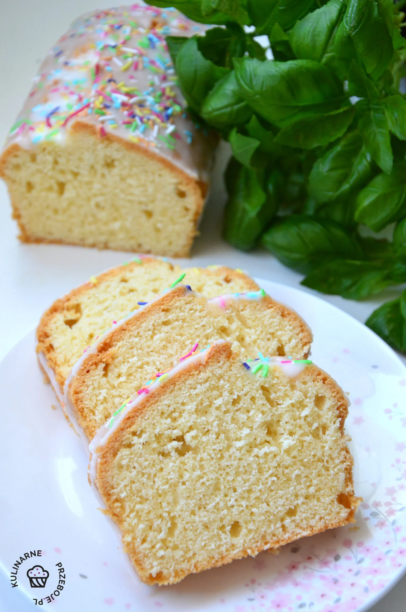

Składniki:
- 250 g masła
- 1 i 1/2 szklanki cukru
- 4 jajka
- 3 szklanki mąki pszennej
- 1 szklanka mleka
- 2 łyżeczki proszku do pieczenia
- 1 łyżka ekstraktu z wanilii
- szczypta soli
Przygotowanie:
- Wymieszaj w misce mąkę, proszek do pieczenia i sól.
- W osobnej misce utrzyj masło z cukrem na puszystą masę.
- Dodaj jajka po jednym, cały czas miksując.
- Stopniowo dodawaj suche składniki, na przemian z mlekiem i ekstraktem z wanilii